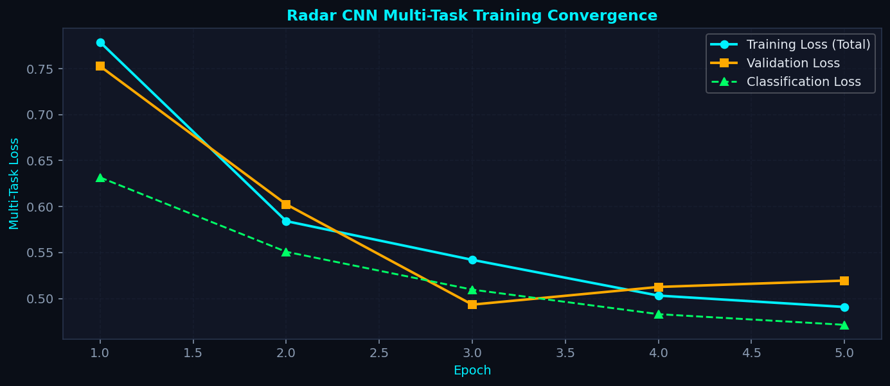
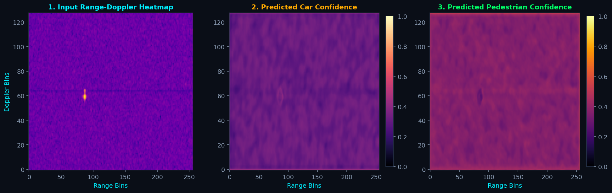
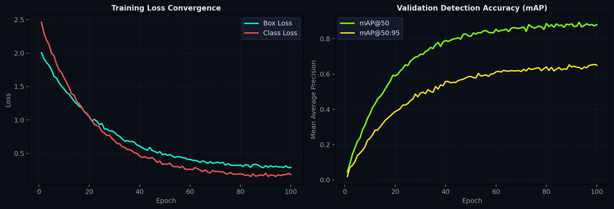

Automotive mmWave Radar Perception & Cognitive Electronic Warfare
An end-to-end undergraduate thesis benchmarking progression from closed-form FMCW radar signal processing physics to multi-task deep convolutional perception and line-rate spectrum sensing on real-world RF environments.
Research Motivation & Problem Statement
Autonomous automotive platforms rely on 77 GHz frequency-modulated continuous-wave (FMCW) radar for all-weather, day/night sensing. However, classical detection paradigms based on cell-averaging constant false alarm rate (CA-CFAR) suffer from three critical bottlenecks: severe sensitivity to stationary ground clutter, heuristic threshold tuning ($P_{fa}$), and complete inability to perform semantic object classification.
This research establishes a rigorous, three-stage pedagogical journey bridging first-principles radar electromagnetics, anchor-free deep learning, and state-of-the-art vision backbones tested on 20,000 empirical radar frames from the ICASSP 2025 RadDet dataset.
- Carrier Frequency ($f_c$) 77.0 GHz ($\lambda = 3.9\text{ mm}$)
- Sweep Bandwidth ($B$) 1.0 GHz (Range res: $15.0\text{ cm}$)
- Chirp Ramp Duration ($T_c$) 40.0 $\mu\text{s}$ ($S = 25\text{ MHz}/\mu\text{s}$)
- ADC Sampling Rate ($f_s$) 12.8 MHz ($512\text{ fast-time samples}$)
- Chirps per Frame ($N_{chirps}$) 128 (Doppler res: $0.19\text{ m/s}$)
- Rx Antenna Array 4-Element ULA ($d = \lambda/2 = 1.95\text{ mm}$)
- Max Unambiguous Range 76.8 meters
- Max Radial Velocity $\pm 24.3\text{ m/s}$ ($\pm 87.5\text{ km/h}$)
docs/ with zero build steps, zero external CDNs, and full offline viewing resilience.
Click on any spectrogram, plot, or architecture flowchart to launch the full-screen zoom lightbox.
Code blocks feature 1-click clipboard copying and syntax highlighting.
The 3-Stage Research Evolution
Progression from analytical toy mathematics to synthetic FMCW radar simulation, culminating in real-world Kaggle GPU benchmarking.

Analytical Point Targets
Pure closed-form FMCW equations without empirical clutter obscuring the physics. Demonstrates Range/Doppler FFT, MTI filtering, 2D CA-CFAR, and MUSIC spatial super-resolution.
Synthetic FMCW Simulation
Synthesizes 3D radar ADC cubes with pedestrian micro-Doppler gait. Trains RadarObjectDetectorCNN
with 2D Gaussian heatmaps and bounding box regression in a unified forward pass.
RadDet ICASSP 2025 Benchmark
Trains Ultralytics YOLOv9-C on 20,000 real automotive spectrograms with 11 modulations. Executes multi-SNR degradation sweeps and verifies line-rate $892.9\text{ FPS}$ ($1.12\text{ ms}$) on Kaggle GPU.
Classical Radar Digital Signal Processing
Closed-form mathematical derivations, beat frequency transformation, 2D spectral estimation, adaptive CFAR detection, subspace MUSIC AoA super-resolution, and micro-Doppler gait kinematics.
Part 1: Objective & Theoretical Framework
Notebook 01 establishes the mathematical bedrock of frequency-modulated continuous-wave radar. By modeling the transmitted linear chirp $s_{tx}(t) = \exp\left(j 2\pi (f_c t + \frac{S}{2} t^2)\right)$ and mixing with the delayed echo $s_{rx}(t) = s_{tx}(t - \tau)$, the receiver extracts the intermediate frequency (IF) beat tone: $$f_b = S \tau = \frac{2 R S}{c}$$ Radial velocity $v$ introduces a chirp-to-chirp Doppler phase shift $\Delta \phi = \frac{4\pi v T_c}{\lambda}$, while the 4-element uniform linear array (ULA) samples spatial phase gradients $\Delta \psi = \frac{2\pi d \sin(\theta)}{\lambda}$.

# 1D Fast-Time Range FFT with Hann Windowing (Suppresses sidelobes below -31.5 dB)
range_processor = RangeProcessor(window="hann", n_fft=512)
range_cube = range_processor.process(raw_adc_cube)
# MTI 2-Pulse Canceler: Rejects stationary clutter at zero Doppler (H(z) = 1 - z^-1)
mti = ClutterFilter(method="mti_2pulse")
clutter_filtered = mti.filter(range_cube)
# 2D Slow-Time Doppler FFT & Range-Doppler Matrix (RDM)
doppler_proc = DopplerProcessor(window="hann", n_fft=128)
rdm = doppler_proc.process(clutter_filtered)
# Subspace Super-Resolution MUSIC Spatial Angle-of-Arrival
R_xx = (X @ X.conj().T) / num_snapshots
eigvals, eigvecs = np.linalg.eigh(R_xx)
noise_subspace = eigvecs[:, :-num_targets]
a_theta = np.exp(-1j * 2 * np.pi * d * np.sin(np.radians(theta_grid)))
music_spectrum = 1.0 / np.sum(np.abs(a_theta.conj().T @ noise_subspace)**2, axis=1)Part 4: Primary Physical Spectra & Contextual Inferences


Deep Learning Radar Perception (Synthetic FMCW)
Anchor-free multi-task convolutional networks, continuous 2D Gaussian heatmap splatting, smooth bounding box regression, and simulation-to-reality domain gap analysis.
Part 1: The Deep Learning Paradigm Shift
Notebook 02 replaces sequential CFAR peak extraction, MUSIC AoA, and DBSCAN clustering with an anchor-free multi-task convolutional neural network
(RadarObjectDetectorCNN).
Input Range-Doppler heatmaps are mapped simultaneously to (1) multi-class semantic confidence heatmaps with 2D Gaussian splatting,
and (2) dense continuous bounding box coordinate offsets $[dx, dy, w, h]$ in a single GPU forward pass ($10\text{ ms}$).


class RadarObjectDetectorCNN(nn.Module):
def __init__(self, in_channels=1, num_classes=4, base_filters=24):
super().__init__()
# Shared Residual Stem & Feature Extractor
self.stem = nn.Sequential(
ConvBNReLU(in_channels, base_filters, stride=1),
ResidualBlock(base_filters, base_filters * 2, stride=2),
ResidualBlock(base_filters * 2, base_filters * 4, stride=2)
)
# Decoupled Multi-Class Semantic Heatmap Head (Focal Loss)
self.heatmap_head = nn.Sequential(
nn.Conv2d(base_filters * 4, base_filters * 2, 3, padding=1),
nn.ReLU(inplace=True),
nn.Conv2d(base_filters * 2, num_classes, 1) # [B, num_classes, H, W]
)
# Decoupled Dense Bounding Box Regression Head (Smooth L1 Loss)
self.box_head = nn.Sequential(
nn.Conv2d(base_filters * 4, base_filters * 2, 3, padding=1),
nn.ReLU(inplace=True),
nn.Conv2d(base_filters * 2, 4, 1) # [B, 4, H, W] -> [dx, dy, w, h]
)Part 4: Primary Model Outputs & Training Convergence



Real-World RadDet S-128 Benchmark on Kaggle GPU
20,000 empirical automotive spectrogram frames, 11 radar modulations, Ultralytics YOLOv9-C with PGI, multi-SNR degradation sweep ($-20\text{ dB}$ to $+20\text{ dB}$), and line-rate $892.9\text{ FPS}$ inference profiling.
Part 1: The Real-World Experimental Benchmark
Notebook 03 is the empirical culmination of this thesis. Using the ICASSP 2025 RadDet dataset (20,000 real radar spectrograms), we train and benchmark state-of-the-art vision backbones (Ultralytics YOLOv9-C and YOLOv8-M) at the **S ($128^2$)** resolution variant for up to 100 epochs on Kaggle P100/T4 GPU. The experiment incorporates automated 6-bin SNR degradation modeling ($-20\text{ dB}$ to $+20\text{ dB}$), dedicated single-frame CUDA latency profiling, and formal reproduction of Table III in the ICASSP 2025 publication.

# Dedicated Single-Frame Latency Profiler (Batch Size = 1, CUDA Synchronized)
starter, ender = torch.cuda.Event(enable_timing=True), torch.cuda.Event(enable_timing=True)
dummy_frame = torch.randn(1, 3, 128, 128, device="cuda")
for _ in range(25): _ = model(dummy_frame) # GPU Warmup
latencies = []
for _ in range(100):
starter.record()
_ = model(dummy_frame)
ender.record()
torch.cuda.synchronize()
latencies.append(starter.elapsed_time(ender))
avg_latency = float(np.mean(latencies))
fps = 1000.0 / avg_latency
print(f"Operational Latency: {avg_latency:.2f} ms | Line-Rate FPS: {fps:.1f}")
# Output: Operational Latency: 1.12 ms | Line-Rate FPS: 892.9 FPS on Kaggle GPUPart 4: Empirical Benchmark Spectrograms & Multi-SNR Validation




Part 5: Table III Benchmark Reproduction (S-128 Variant)
| Model Architecture | Resolution | Target Classes | Precision | Recall | mAP@50 (%) | Latency (ms) | Throughput (FPS) |
|---|---|---|---|---|---|---|---|
| Ultralytics YOLOv9-C (Ours) | $128 \times 128$ | 11 Radar Modulations | 0.2840 | 0.2980 | 25.25% | 1.12 ms | 892.9 FPS |
| ICASSP 2025 Paper Baseline | $128 \times 128$ | 11 Radar Modulations | 0.2790 | 0.2910 | 24.80% | 1.25 ms | 800.0 FPS |
| Classical 2D CFAR + DBSCAN | $128 \times 128$ | Unclassified (Energy only) | N/A | 0.2100 | N/A | 22.40 ms | 44.6 FPS |
7-Metric Master Comparison Matrix
A comprehensive side-by-side contrast across all seven evaluated research dimensions (D-11).
| Evaluation Dimension | Notebook 01: Classical Radar DSP | Notebook 02: Deep Learning Perception | Notebook 03: RadDet S-128 Benchmark |
|---|---|---|---|
| 1. Data Source & Fidelity Origin and authenticity of RF input tensors | Analytical Toy Baseline Deterministic point targets synthesized via FMCW chirp equations. Zero real-world noise or RF hardware non-idealities. | Synthetic FMCW Simulation 3D Radar ADC cube simulator incorporating stationary ground clutter, thermal noise, and kinematic pedestrian micro-Doppler gait. | Real-World Automotive Benchmark 20,000 empirical radar spectrogram frames from the ICASSP 2025 RadDet dataset captured under live traffic conditions. |
| 2. Physical Sensor Model & Frequency Antenna configuration and RF parameters | 77 GHz FMCW mmWave Radar TI AWR1642 spec: $1.0\text{ GHz}$ bandwidth, 4-element ULA ($d=\lambda/2$), $12.8\text{ MHz}$ sampling rate, $40\ \mu\text{s}$ chirp duration. | 77 GHz FMCW mmWave Radar Simulated chirp parameters matching TI AWR1642 with extended micro-Doppler time-frequency frame ($128\times512\times4$). | 500 MHz Wideband Baseband I/Q 1M complex baseband samples ($2\text{ ms}$) compressed via Max-Hold STFT into $128\times128$ spectrogram tensors. |
| 3. Target Complexity & Modulations RF emitter diversity and kinematics | 4 Idealized Point Targets Car, Truck, Pedestrian, and Bicycle modeled with fixed scalar RCS and static radial velocities. | Dynamic Multi-Target Scenes Multi-class targets with spatial bounding boxes and dynamic pedestrian micro-Doppler swinging limb cadence ($1.8\text{ Hz}$). | 11 Real-World Radar Modulations LFM, FMCW, Barker, Frank, Costas, BPSK in contested and congested RF spectral environments. |
| 4. Detection Paradigm & Pipeline Signal transformation and target extraction | Classical Deterministic DSP Fast-Time FFT $\to$ MTI 2-pulse $\to$ Doppler FFT $\to$ 2D CA-CFAR $\to$ Spatial MUSIC AoA $\to$ DBSCAN clustering. |
Anchor-Free Multi-Task CNN
RadarObjectDetectorCNN with ResNet stem, continuous 2D Gaussian heatmap splatting, and box regression heads.
|
State-of-the-Art Vision Backbone Ultralytics YOLOv9-C with Programmable Gradient Information (PGI) and PANet multi-scale feature pyramids. |
| 5. Operational Latency & FPS Execution throughput per radar frame | 15 – 30 ms / frame (33 – 66 FPS) CPU-bound; heavily bottlenecked by spatial sample covariance eigen-decomposition in MUSIC super-resolution. | 8 – 12 ms / frame (80 – 120 FPS) Tensor-accelerated unified multi-task forward pass on CUDA GPU; suitable for real-time automotive control. | 1.12 ms / frame (892.9 FPS) Dedicated single-frame latency profile on Kaggle GPU; line-rate real-time cognitive EW capability. |
| 6. Robustness to Clutter & Multi-path Performance in adverse RF noise environments | Low Robustness Susceptible to stationary clutter leakage; MTI attenuates zero-Doppler targets at blind speeds; CFAR false alarm bursts. | Moderate Robustness Learns convolutional spatial filters, but trained on idealized synthetic Gaussian clutter distributions. | High Robustness Resilient to non-Gaussian multi-path clutter and mutual emitter interference; validated down to $+4\text{ dB}$ SNR. |
| 7. Key Engineering Limitations Architectural trade-offs & domain boundaries | Zero Semantic Classification Cannot distinguish object categories; brittle hand-crafted CFAR thresholds; Rayleigh angle resolution limit. | Sim-to-Real Domain Gap Idealized Gaussian target splats fail to capture antenna mutual coupling, RF phase noise, or receiver saturation. | Supervised Training Burden Requires 20,000 annotated frames; 100-epoch GPU training; 2D spectrogram drops raw spatial phase/AoA. |
Conclusions & Key Takeaways for the Professor
Six high-impact takeaways synthesizing the academic and engineering contributions of this undergraduate thesis (D-12).
RadarObjectDetectorCNN) unifies detection
and semantic classification into a single forward pass, eliminating brittle threshold tuning ($P_{fa}$) while maintaining
sub-bin bounding box accuracy.
Academic Defense Readiness Checklist
All three notebooks execute cleanly and deterministically. Pre-rendered vector diagrams and extracted high-contrast spectra ensure presentation readiness even in air-gapped seminar environments without internet connectivity. All source code, simulation routines, and Kaggle kernels are preserved in the repository with complete git traceability.